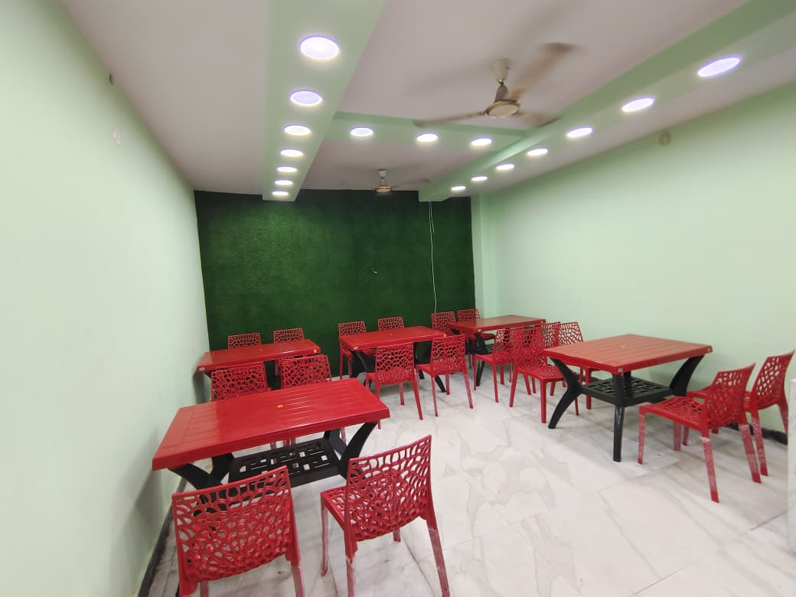
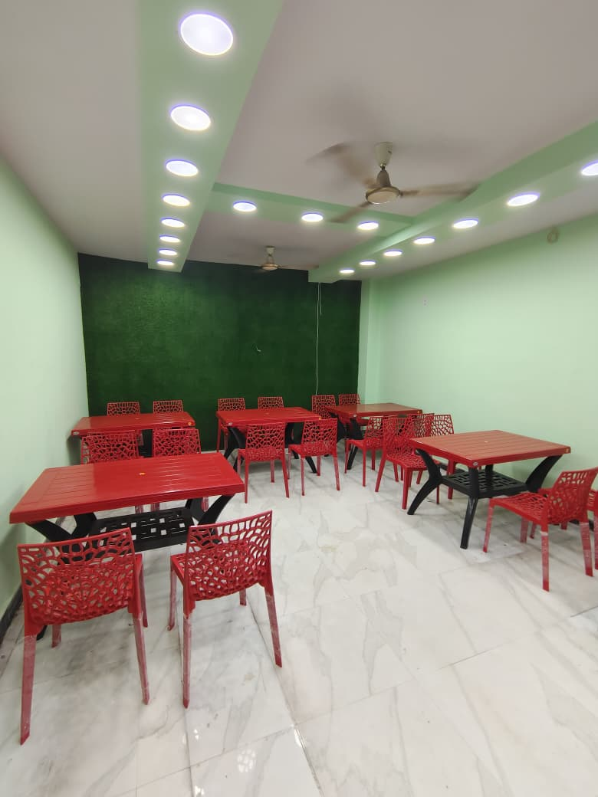
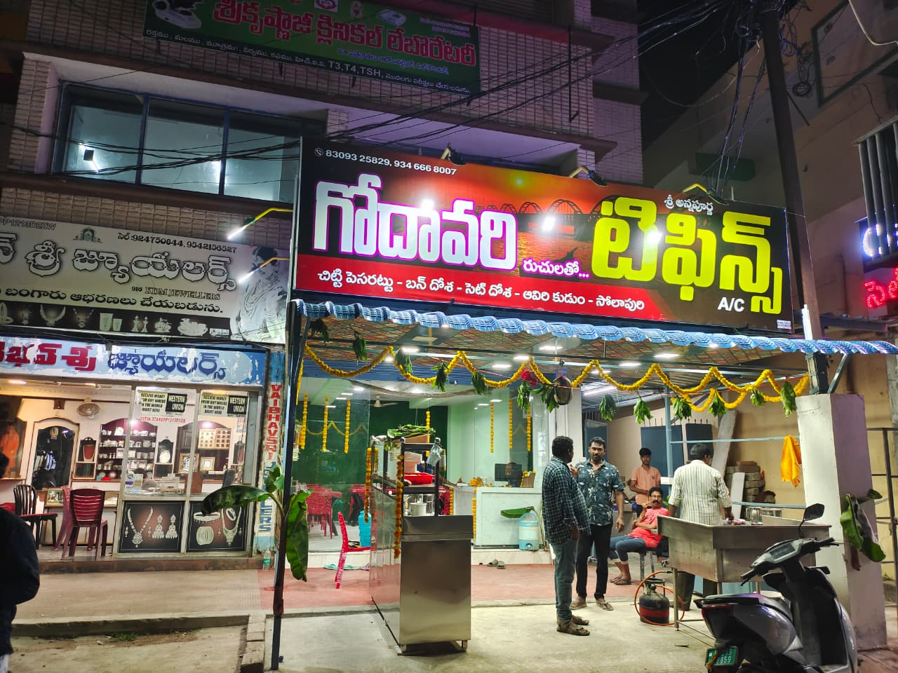
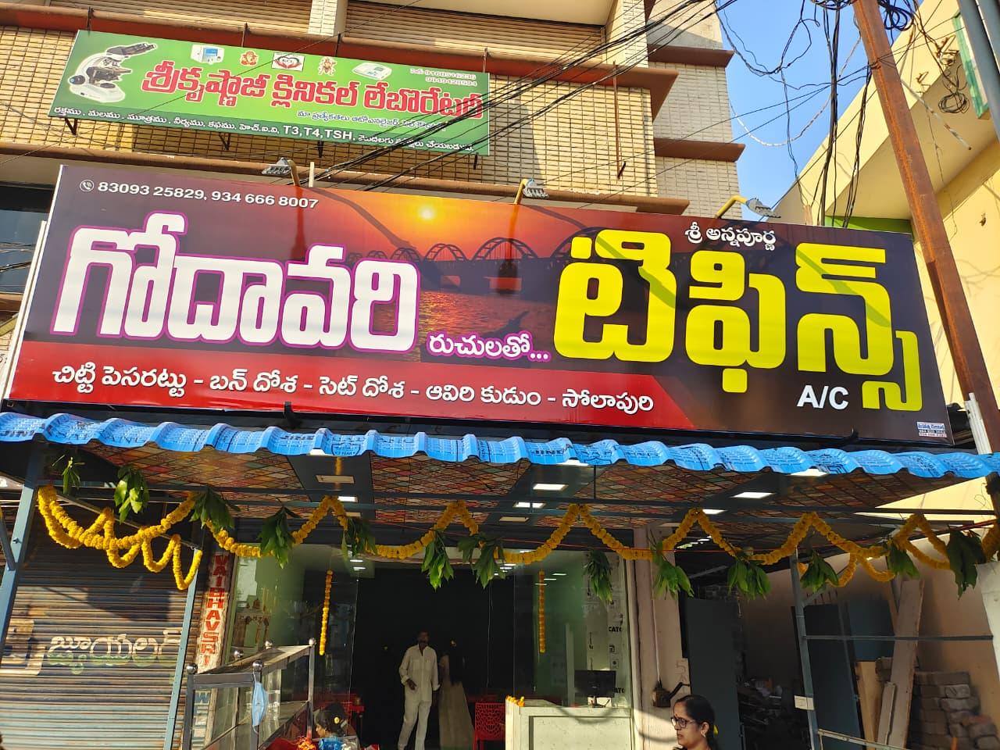

ABOUT US
మా గురించి
🍽️ Experience the authentic taste of Andhra tradition with Godavari Tiffins. We serve freshly prepared South Indian breakfast varieties with rich flavors, quality ingredients, and traditional recipes that remind you of homemade food. From crispy dosas to soft idlis, fluffy puris, and delicious chutneys, every dish is prepared with care and served with love. Our special recipes bring the true aroma and taste of the Godavari region to your plate.
WHY CHOOSE US?
మమ్మల్ని ఎందుకు ఎంచుకోవాలి?
- 🍛 Traditional Andhra Taste
- 🔥 Freshly Prepared Food
- 🧼 Clean & Hygienic Cooking
- 💰 Affordable Prices
- 👨🍳 Experienced Catering Team
- ⭐ Best Service for All Functions
“Traditional Taste… Served with Love.”
MENU
మెను

IDLI

VADA

BONDA

PURI

DOSA

PESARATTU

GODAVARI SPECIALS

CHAPATHI

PARATHA

GODAVARI COMBO
CATERING SERVICES
కేటరింగ్ సేవలు
Godavari tiffins Catering offers traditional and hygienic food services within Narsipatnam.
We provide catering services for :-
CONTACT DETAILS
సంప్రదాయ వివరాలు
For any inquiries, please contact us at:
- 📞 Phone: 9346668007, 9396689007
- 📧 Email: snrajchekuri@gmail.com
- 📍 Narsipatnam, Andhra Pradesh
TIMINGS
సమయాలు
Monday – Saturday (Morning) 6:00 AM – 11:00 AM
Monday – Saturday (Evening) 6:00 PM – 10:00 PM
Sunday 6:00 AM – 2:00 PM
CUSTOMER REVIEWS
గ్రాహకుల అభిప్రాయాలు
Best food ever tried! Highly recommended.
Recently had breakfast here, very fresh and tasty.
Good quality and hygienic food.



